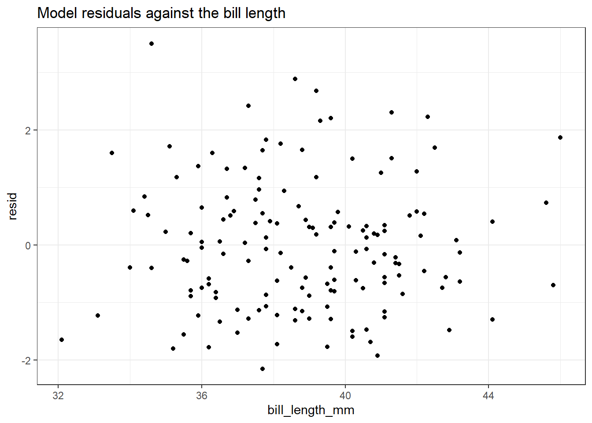

בפרק זה נדון באחד המודלים הבסיסיים בסטטיסטיקה: רגרסיה לינארית.
רגרסיה (regression) היא שם כולל למודלים אשר מתאימים בין משתנים בלתי תלויים (המסומנים ב-x בדרך כלל, ונקראים גם משתנים מסבירים), לבין משתנה תלוי (המסומן ב-y בדרך כלל). רגרסיה לינארית הינה סוג מסוים של רגרסיה המניח קשר לינארי בין המשתנה התלוי לבין המשתנים הבלתי תלויים.
כאמור, בפרק זה איננו מתעמקים בתיאוריה הסטטיסטית, ולצורך העמקת הרקע הסטטיסטי שנוגע לבעיות רגרסיה, מומלץ לעיין בספר מתאים (לדוגמה Walpole et al. 1993). עם זאת, נציין שמודל הרגרסיה הלינארית מוצא את מקדמי ה-\(\beta\) שקושרת בין המשתנה התלוי למשתנים המסבירים: \[
y=\beta_0 + \beta_1 x_1 + \beta_2 x_2 + \ldots + \beta_p x_p + \epsilon
\]
המקדמים שמביא מודל הרגרסיה הלינארית מביאים למינימום את סכום ריבועי השגיאות אשר נמחיש בהמשך הפרק (בנוסחה לעיל \(\epsilon\) מסמן את שגיאת המודל). התחזיות שהמודל מפיק מסומנות ב-\(\hat{y}_i\), והממוצע של כלל תצפיות הערך \(y\) מסומן ב-\(\bar{y}\).
Note
באופן כללי נציין שיש אבחנה בין בעיות רגרסיה בהן המשתנה התלוי מקבל ערכים רציפים (ערך ממשי), לבין בעיות סיווג (Classification), בהם המשתנה התלוי מקבל ערך קטגוריאלי. נדון באבחנה זו ובדוגמאות נוספות של מודלים בפרק הבא.
נדגים שימוש בגרסיה לינארית באמצעות הדאטה שעמו עבדנו עד כה, שבו תצפיות של פינגוינים (palmerpenguins::penguins). כפי שראינו בפרקים קודמים (ראו לדוגמה בפרק 4 תחת “מיפויים נוספים”), הקשרים שבין המשתנים שבדאטה תלויים גם בסוג הפינגויין, ולכן נתחיל בהסתכלות על הקשר שבין עומק המקור לאורך המקור בזן Adelie בלבד.
התרשים הבא מציג את פיזור התצפיות בין עומק מקור לאורך המקור, וכמו כן מציג רגרסיה לינארית “פשוטה” (כלומר רגרסיה שבה יש משתנה בלתי תלוי יחיד).
המשתנה התלוי בציר x (אורך המקור), והמשתנה הבלתי-תלוי בציר y (עומק המקור). במקרה זה הבחירה במה יהיה המשתנה התלוי ומה המשתנה הבלתי תלוי היא בחירה שרירותית, אז בדרך כלל זהו אינו המצב (ראו הסבר במסגרת שלאחר התרשים).
את קו הרגרסיה אנחנו מוסיפים באמצעות הפקודה stat_smooth(method="lm") , אשר מוסיפה לתרשים פיזור החלקה, במקרה זה בשיטה של רגרסיה לינארית (lm זה קיצור של linear model). הרקע האפור מסביב לקו הלינארי של הרגרסיה מהווה רווח בר סמך למודל הרגרסיה (מיד נדון במשמעויות שלו).
library(palmerpenguins)library(tidyverse)adelie_penguins <- penguins %>%filter(species =="Adelie") %>%filter(!is.na(bill_length_mm), !is.na(bill_depth_mm))adelie_penguins %>%ggplot(aes(x = bill_length_mm, y = bill_depth_mm)) +geom_point() +stat_smooth(method ="lm") +ggtitle("Relationship of bill depth and bill length among Adelie penguins",subtitle ="Linear model applied")
על פי ההמחשה הויזואלית של קו הרגרסיה, נראה שיש קשר חיובי בין עומק המקור לבין אורך המקור (כאשר עולה האורך, כך עולה גם העומק של המקור). על מנת לקבל את מודל הרגרסיה ניתן להשתמש בפקודה lm באופן הבא:
Call:
lm(formula = bill_depth_mm ~ bill_length_mm, data = adelie_penguins)
Residuals:
Min 1Q Median 3Q Max
-2.1512 -0.8012 -0.0698 0.5766 3.5032
Coefficients:
Estimate Std. Error t value Pr(>|t|)
(Intercept) 11.40912 1.33893 8.521 1.61e-14 ***
bill_length_mm 0.17883 0.03444 5.193 6.67e-07 ***
---
Signif. codes: 0 '***' 0.001 '**' 0.01 '*' 0.05 '.' 0.1 ' ' 1
Residual standard error: 1.123 on 149 degrees of freedom
Multiple R-squared: 0.1533, Adjusted R-squared: 0.1476
F-statistic: 26.97 on 1 and 149 DF, p-value: 6.674e-07
השתמשנו בפקודה summary שיודעת לקבל אובייקטים שונים (במקרה הזה אובייקט שהוא תוצר של מודל לינארי), ולהציג סיכום שלו הכולל את מקדמי המודל, המובהקויות, וכן מימדים נוספים כגון \(r^2\), וסטטיסטי F, שמיד נסביר עליהם.
7.1 פלט הפקודה lm
החלק הראשון בפלט (call) מתאר את הפקודה שבה השתמשנו על מנת לקבל את המודל.
7.1.1 השאריות
החלק השני (residuals) מתאר את שאריות המודל. השאריות הן ההפרש בין הערך האמיתי של y לבין תוצאת המודל (במקרה זה הערך של אורך המקור פחות חיזוי המודל לאורך המקור). בפלט המודל ניתן לראות את המינימום, ואת הרבעונים (ביניהם החציון), ואת המקסימום. ניתן גם לחלץ את השאריות עצמן על ידי הקריאה adelie_lm$residuals. באופן כזה ניתן גם להסתכל בהתפלגות עצמה (נבחן זאת בהמשך הפרק).
Note
שימו לב שבשאריות לא מופיע ממוצע השגיאות. הסיבה לכך היא שבמודל רגרסיה לינארית ממוצע השגיאות הוא תמיד אפס. למעוניינים, ניתן למצוא הוכחות מתמטיות בספרות, וגם במקורות שונים באינטרנט, לדוגמה בקישור זה.
אם נקפוץ רגע לתחתית הפלט, נראה שבשורה השלישית מלמטה יש את ה-Residual standard error, שהיא טעות התקן של השאריות. הערך שמופיע בצמוד (149) הוא מספר דרגות החופש של המודל, קרי מספר התצפיות פחות מספר הפרמטרים של המודל, וניתן לחלץ אותו על ידי קריאה ל-adelie_lm$df.residual.
נסו לחשב את sqrt(sum(adelie_lm$residuals^2)/adelie_lm$df.residual)) על מנת לשחזר את החישוב המופיע בשורה הזו.
7.1.2 טבלת המקדמים
הטבלה שמתחת לשאריות מציגה את מקדמי הרגרסיה, כאשר ה-Intercept הוא החותך (\(\beta_0\)) והשורות הבאות מתייחסות למקדמים של המשתנים (במקרה הזה המקדם של המשתנה bill_length_mm. העמודה Estimate מתייחסת לערך עצמו של המקדם (למעשה מדובר באמד למקדם), העמודה השניה לטעות התקן של המקדם, ושתי העמודות האחרונות מתייחסות למבחן סטטסטי מסוג T-test הבוחן האם המקדם שווה ל-0 (בהשערת האפשר) או שונה מאפס (השערה אלטרנטיבית). העמודה t value מתייחסת לערך סטטיסטי T והעמודה Pr(<|t|) מתייחסת לערך ה-p-value של המבחן.
מימין לעמודת ה-p-value ישנו מקרא של ערכי p-value, שמתואר גם מתחת לטבלה, ועוזר לנו לזהות מיידית מקדמים מובהקים (שימושי בטבלאות ארוכות עם הרבה מקדמים).
7.1.3 שונות מוסברת
אחוז השונות המוסברת, המסומן כ-\(R^2\) הוא היחס בין השונות של מודל הרגרסיה (השונות של התחזיות \(\hat{y}_i\) שמסומנת כ-\(\operatorname{SSR}\)) לבין השונות הכללית של המשתנה התלוי (\(y_i\) המסומנת ב-\(\operatorname{SST}\)). הרעיון הוא שככל שהמודל מכיל יותר שונות, כך הוא מצליח להסביר יותר טוב את המשתנה התלוי, לכן נרצה שהשונות המוסברת תהיה גבוהה ככל הניתן (במסגרת מגבלות של Over-fitting שנדון בהם בפרק הבא). השונות המוסברת חסומה בשונות הכללית (\(0\leq\operatorname{SSR}\leq\operatorname{SST}\)), ולכן \(0\leq R^2\leq1\).
בפלט המודל לעיל, ערך השונות המוסברת הינו \(R^2=0.1533\). כלומר המשתנה bill_length_mm מצליח להסביר כ-15% מהשונות של המשתנה bill_depth_mm.
הערך שמסומן בפלט כ-Adjusted R-squared קרוב לערך \(R^2\), אך מביא בחשבון את מספר הפרמטרים של המודל (ככל שלמודל יהיו יותר פרמטרים, ערך Adjusted R-squared יהיה נמוך יותר).
7.1.4 סטטיסטי F
בתחתיתו של פלט המודל מופיע ערכו של סטטיסטי F. סטטיסטי זה מתייחס למבחן הסטטיסטי שבו בהשערת האפס כלל המקדמים הינם אפס(\(\beta_i=0, \forall i\geq1\)), לעומת ההשערה האלטרנטיבית שבה אחד המקדמים שונה מ-0.
תרגיל: ערכי p-value במודל רגרסיה
במודל שלעיל ערך ה-p-value של סטטיסטי F זהה לערך ה-p-value של מקדם bill_length_mm. למה?
נסו לבנות מודל רגרסיה עם bill_length_mm וגם עם flipper_length_mm. האם במודל זה ערכי ה-p-values של המקדמים ושל מבחן F זהים? הסבירו מדוע.
7.2 המחשה של שגיאות המודל
כעת נמחיש את שגיאות המודל. התרשים הבא מציג מדגם של 25 תצפיות, בציר x המשתנה bill_length_mm ובציר ה-y המשתנה התלוי bill_depth_mm.
set.seed(0)adelie_penguins %>%mutate(model_predictions =predict(adelie_lm)) %>%sample_n(25) %>%ggplot() +geom_line(aes(x = bill_length_mm, y = model_predictions)) +geom_point(aes(x = bill_length_mm, y = bill_depth_mm)) +geom_segment(aes(x = bill_length_mm, xend = bill_length_mm,y = model_predictions, yend = bill_depth_mm),linetype ="dashed") +ggtitle("Illustration of linear regression residual errors",subtitle ="A sample of 25 observations")
הקווים המקווקים בין הנקודות לקו הרגרסיה מתארים את שגיאות הרגרסיה (השאריות). קו הרגרסיה מביא למינימום את סכום הריבועים של השגיאות הללו.
למודל הרגרסיה הלינארית יש שתי הנחות שקשורות לשגיאות:
הנחת הנורמליות של השגיאות: השגיאות מתפלגות נורמלית עם תוחלת 0
הנחת ההומוסקדסטיות של השגיאות: התפלגות השגיאות (פיזור השגיאות למעשה) לא תלויה במיקום התצפית (במקרה זה, לא תלויה בערך של bill_length_mm.
ניתן לחשב מודל רגרסיה גם במקרה שהנחות אלו לא מתקיימות אך המבחנים הסטטיסטיים שמתייחסים למודל ולמקדמי המודל אינם תקפים במידה והנחות הרגרסיה אינן מתקיימות.
7.3 בדיקת הנחות הרגרסיה
כעת נבחן האם הנחות מודל הרגרסיה תקפות עבור מודל הרגרסיה שבנינו.
7.3.1 התפלגות נורמלית
כפי שראינו בפרק 6, עומדים לרשותנו שני כלים על מנת לבחון התפלגות נורמלית: ויז’ואליזציה (כדוגמת q-q plot), ומבחן השערות (כדוגמת טיב התאמה או קולמוגורוב-סמירנוב). נשתמש ראשית בהמחשה ויזואלית ולאחר מכן במבחן סטטיסטי.
tibble(resid = adelie_lm$residuals) %>%ggplot(aes(sample = resid)) +geom_qq() +ggtitle("QQ plot of Adelie linear model residuals") +geom_qq_line()
כפי שניתן לראות, יש חריגה מסוימת מההתפלגות הנורמלית, בעיקר בקצוות של ההתפלגות: מעבר לציון תקן 1 בציר ה-x ניתן לראות שהשאריות גבוהות מהצפוי (מעל הקו של y=x, בחלק הימני העליון של התרשים), ובאופן דומה (אך פחות בולט) בחלק התחתון-שמאלי של התרשים.
נשתמש במבחן קולמוגורוב-סמירנוב לבדיקת ההשערה שההתפלגות של השגיאות נורמלית. במסגרת קלט המבחן אנחנו משתמשים בפונקציה scale על מנת לוודא שסטיית התקן של השגיאות מנורמלת ל-1 (כפי שציינו מוקדם יותר בפרק זה, ממוצע השגיאות הוא 0 ממילא). לחילופין, ניתן היה לציין פרמטרים בפקודה אשר מגדירים לפונקציה לאיזה התפלגות נורמלית משווים הנתונים (כפי שהפעלנו אותה בפרק שדן במבחני השערות).
ks.test(scale(adelie_lm$residuals)[, 1],"pnorm")
Warning in ks.test(scale(adelie_lm$residuals)[, 1], "pnorm"): ties should not
be present for the Kolmogorov-Smirnov test
One-sample Kolmogorov-Smirnov test
data: scale(adelie_lm$residuals)[, 1]
D = 0.066494, p-value = 0.5166
alternative hypothesis: two-sided
על פי פלט הפקודה, ה-p-value לדחיית השערת האפס הינו 0.5166, ולכן לא ניתן לדחות את השערת האפס שהשאריות מתפלגות נורמלית.
נשים לב לאזהרה שהפקודה מוציאה, שמתייחסת לכך שיש שתי תצפיות של שאריות שערכן זהה. מכיוון שהתפלגות נורמלית הינה התפלגות רציפה, ההסתברות לשתי תצפיות שוות הינה 0. מכיוון שהתצפיות שאנו משתמשים בהן הינן תצפיות מדידה, ישנן שתי תצפיות זהות עם ערך שארית זהה.
תרגיל: בחינת נורמליות של השאריות
השתמשו בפונקציה unique על מנת להריץ את הפקודה מבלי לקבל את הודעת האזהרה של פקודת ks.test. האם השתנתה התובנה לגבי ההתפלגות הנורמלית של השאריות?
השתמשו במבחן טיב-התאמה במקום במבחן קולמוגורוב סמירנוב. האם השתנתה התובנה לגבי ההתפלגות הנורמלית של השאריות?
7.3.2 הומוסקדסטיות
על מנת לבחון הומוסקדסטיות, נרצה לראות האם יש הבדל בשונות של שגיאות המודל כפונקציה של המשתנה הבלתי תלוי. במקרים בהם משתמשים ברגרסיה רב משתנית (יותר ממשתנה בלתי תלוי אחד), ניתן לבצע בדיקה זו למול כל משתנה בלתי תלוי (או שלעיתים מבוצעת הבדיקה למול המשתנה התלוי, כקירוב).
tibble(adelie_lm$model) %>%mutate(resid = adelie_lm$residuals) %>%ggplot(aes(x = bill_length_mm, y = resid)) +geom_point() +ggtitle("Model residuals against the bill length")

מהתרשים לא ניתן להבחין בהפרה משמעותית של הנחת ההומוסקדסטיות: הפיזור של התצפיות מסביב לציר ה-y=0 נראה כאחיד. ניתן גם לחלק את המשתנה למספר קבוצות, ולהמחיש את השונות בדרכים נוספות, לדוגמה באמצעות Boxplot. שיטה זו שימושית במיוחד כשמדובר במשתנים קטגוריאליים, אך ניתן להשתמש בה גם במקרה הנוכחי על ידי חלוקת המשתנה הבלתי תלוי לקטגוריות:
homoscedasticity_test <-tibble(adelie_lm$model) %>%mutate(resid = adelie_lm$residuals) %>%mutate(bill_length_fct =cut(bill_length_mm, breaks =c(31, 37, 40, 42, 50 )))homoscedasticity_test %>%ggplot(aes(x = bill_length_fct, y = resid)) +geom_boxplot() +ggtitle("Model residual distribution against bill length groups (boxplot)")
בהסתכלות בתרשים ה-Boxplot נראה שיש הבדל מסוים בין הקבוצות. נשתמש במבחן הומוסקדסטיות לשונות על מנת לבחון את ההשערה להומוסקדסטיות (לעומת השערה אלטרנטיבית של הטרוסקדסטיות).
יש מספר מבחנים סטטיסטיים בהם ניתן להשתמש (לדוגמה במבחן F לשיוויון שונויות, שבו השתמשנו בפרק שעסק במבחני השערות). נדגים את המבחן הסטטיסטי באמצעות מבחן Bartlett’s test ובאמצעות Levene’s test.
bartlett.test(resid ~ bill_length_fct, data = homoscedasticity_test)
Bartlett test of homogeneity of variances
data: resid by bill_length_fct
Bartlett's K-squared = 1.6153, df = 3, p-value = 0.6559
car::leveneTest(resid ~ bill_length_fct, data = homoscedasticity_test)
Levene's Test for Homogeneity of Variance (center = median)
Df F value Pr(>F)
group 3 0.8096 0.4904
147
בשני המבחנים קיבלנו ערכי p-value>0.05 ולכן לא ניתן לדחות את השערת האפס שהשונות בין הקבוצות שווה. ככל הנראה, הנחת ההומוסקדסטיות מתקיימת והמודל תקין. ככלל, ניתן להסתפק במבחן אחד מבין השניים.
7.4 סידור פלט הפקודה
נציין שישנה דרך לחלץ את נתוני המקדמים של המודל כאובייקט tibble על ידי שימוש בפקודה broom::tidy באופן הבא (בדומה לשימוש בפקודה זו שראינו בפרק הקודם):
ישנן פקודות שונות שניתן להשתמש בהן על מנת להדפיס את תוצאות הרגרסיה בטבלה מסודרת (כזו שתתאים לפרסום), לדוגמה:
gtsummary::tbl_regression(adelie_lm)
Characteristic
Beta
95% CI1
p-value
bill_length_mm
0.18
0.11, 0.25
<0.001
1 CI = Confidence Interval
חבילות נוספות הינן stargazer לטבלאות, ו-jtools לויז’ואליזציות.
לא נדון בחבילות אלו בפרק זה, אך הקורא המעוניין מוזמן להתעמק בחבילות וביכולות.
7.5 רגרסיה מרובת משתנים
עד כה הדגמנו רגרסיה חד-משתנית, כלומר משתנה בלתי תלוי יחיד. כעת נרחיב את ההסתכלות למודל רגרסיה רב משתני: ישנם מספר משתנים בלתי-תלויים (ומשתנה תלוי אחד).
נשתמש במודל של רגרסיה לינארית לחיזוי ה-bill_depth_mm, באמצעות משתנים נוספים:
Call:
lm(formula = bill_depth_mm ~ bill_length_mm + flipper_length_mm +
body_mass_g + sex, data = adelie_penguins)
Residuals:
Min 1Q Median 3Q Max
-1.9988 -0.6258 -0.0205 0.6169 2.6504
Coefficients:
Estimate Std. Error t value Pr(>|t|)
(Intercept) 13.4808454 2.6455712 5.096 1.1e-06 ***
bill_length_mm -0.0024733 0.0379562 -0.065 0.948136
flipper_length_mm 0.0088627 0.0138460 0.640 0.523153
body_mass_g 0.0007625 0.0002747 2.776 0.006249 **
sexmale 0.9030693 0.2490620 3.626 0.000401 ***
---
Signif. codes: 0 '***' 0.001 '**' 0.01 '*' 0.05 '.' 0.1 ' ' 1
Residual standard error: 0.9571 on 141 degrees of freedom
(5 observations deleted due to missingness)
Multiple R-squared: 0.4009, Adjusted R-squared: 0.3839
F-statistic: 23.58 on 4 and 141 DF, p-value: 6.06e-15
ראשית, נשים לב לאופן ההתייחסות של המודל למשתנה sex שהוא משתנה מסוג פקטור (factor). למשתנה זה ישנם שני ערכים אפשריים (male/female). הפקודה הופכת את המשתנה למשתנה דמה (dummy variable), אשר מקבל את הערך 1 כאשר הפרט ממין זכר (ומקבל 0 כאשר הפרט ממין נקבה). לכן בטבלת הפלט בשורה הרלוונטית המתייחסת למשתנה sex, מופיע גם הערך שממופה על ידי הפקודה ל-1 (כ-sexmale).
פלט הפקודה מלמד אותנו את התכונות הבאות של המודל:
המודל מסביר כ-40% מהשונות (Multiple R-squared: 0.4009)
הרגרסיה מובהקת (כלומר לפחות אחד מהמקדמים שונה מאפס), על בסיס ה-p-value שמדווח בתחתית הפלט (p-value: 6.06e-15)
המשתנים המובהקים הינם body_mass_g, וכן sex:
כאשר משקל הפרט עולה בגרם, אז עומק המקור (המשתנה התלוי) גדל ב-0.0007625 ס”מ (בהתאם למקדם של המשקל)
כאשר הפינגויין הינו זכר, אז עומק המקור גדל ב-0.903 (בהתאם למקדם של sex).
תרגיל: פקטורים מרובי ערכים ברגרסיה לינארית
בדוגמה שלהלן ראינו משתנה פקטוריאלי שמקבל שני ערכים אפשריים, ובא לידי ביטוי בפלט הפקודה בשורה של sexmale.
מה צפוי לקרות במקרה של משתנה פקטוריאלי שיש לו יותר ערכים אפשריים?
כמה משתני דמה נקבל במקרה של משתנה פקטור שיש לו t ערכים מקוריים אפשריים?
האם תוכלו ליצור מהנתונים הקיימים (penguins) מודל רגרסיה המכיל משתנה פקטוריאלי עם יותר משני ערכים אפשריים?
תרגיל: בחינת הנחות מודל הרגרסיה
השתמשו בכלים שנידונו בסעיף “בדיקת הנחות הרגרסיה” על מנת לבחון את הנחות הרגרסיה שלעיל:
האם מתקיימת הנחת הומוסקדסטיות?
האם מתקיימת הנחת ההתפלגות הנורמלית של השאריות?
7.5.1 אינטראקציה של משתנים
רגרסיה לינארית מניחה מודל לינארי (סכום של משתנים המוכפלים במקדמים), אך בפועל ניתן להשתמש בה גם על מנת לבטא קשרים שאינם לינאריים. לדוגמה מכפלה של משתנים, חזקות, ועוד קשרים פונקציונליים. התאמה זו ניתן לבצע על ידי הגדרה של משתנים נוספים שהם טרנספורמציה של משתנים קיימים, או לעיתים על ידי שימוש בארגומנט ה-formula בפונקציה lm. אחת הדוגמאות למקרים כאלו היא אינטראקציה בין משתנים, קרי כאשר היחס בין משתנה תלוי למשתנים הבלתי תלויים תלוי במכפלה בין המשתנים הבלתי תלויים.
ניתן למצוא דוגמה לאינטראקציה גם בנתונים של הפינגויינים, ולמעשה, ראינו דוגמה דומה בפרק קודם שעסק בויז’ואליזציות (פרק 4). נמחיש זאת באמצעות התרשים הבא שמציג את הקשר בין אורך הכנף, סוג הפינגויין, והשפעתם על עומק המקור.
penguins %>%ggplot(aes(color = species, y = bill_depth_mm, x = flipper_length_mm)) +geom_point() +stat_smooth(method ="lm", se =FALSE) +ggtitle("Illustration of interaction between flipper_lenth_mm and species")
כפי שניתן לראות בתרשים, לכל סוג פינגויינים קשר שונה בין עומק המקור ואורך הכנף. אם ננסה לבנות מודל שלא מביא בחשבון את האינטראקציה בין סוג הפינגויין לאורך הכנף, נקבל מודל מטעה שיציג קשר שלילי בין עומק המקור ואורך הכנף. למעשה, ניתן לראות שעבור פינגויינים מסוג Adelie ומסוג Chinstrap הקשר דומה, אך פינגויינים מסוג Gentoo ממחישים קשר שונה.
על מנת להביא בחשבון את האינטראקציה המתוארת נשתמש בנוסחה הבאה: bill_depth_mm ~ flipper_length_mm * species להלן:
interaction_lm <-lm(bill_depth_mm ~ flipper_length_mm * species, data = penguins)summary(interaction_lm)
Call:
lm(formula = bill_depth_mm ~ flipper_length_mm * species, data = penguins)
Residuals:
Min 1Q Median 3Q Max
-2.73455 -0.66057 -0.02039 0.65146 2.92206
Coefficients:
Estimate Std. Error t value Pr(>|t|)
(Intercept) 7.47494 2.30556 3.242 0.00131 **
flipper_length_mm 0.05723 0.01213 4.718 3.50e-06 ***
speciesChinstrap -7.14033 3.99381 -1.788 0.07470 .
speciesGentoo -15.71179 3.74181 -4.199 3.44e-05 ***
flipper_length_mm:speciesChinstrap 0.03513 0.02059 1.706 0.08900 .
flipper_length_mm:speciesGentoo 0.04968 0.01820 2.730 0.00667 **
---
Signif. codes: 0 '***' 0.001 '**' 0.01 '*' 0.05 '.' 0.1 ' ' 1
Residual standard error: 0.9715 on 336 degrees of freedom
(2 observations deleted due to missingness)
Multiple R-squared: 0.7615, Adjusted R-squared: 0.758
F-statistic: 214.6 on 5 and 336 DF, p-value: < 2.2e-16
פרשנות הטבלה כעת תביא בחשבון את האינטראקציה:
עבור פרטים מסוג Adelie, הקשר בין אורך הכנף לבין עומק המקור מתבטא במקדם של flipper_length_mm: כל תוספת של יחידה אחת לאורך הכנף מתבטא בתוספת של 0.05 מ”מ לעומק המקור.
עבור פרטים מסוג Gentoo, יש להביא בחשבון את המקדם שמסומן בטבלה בשורה האחרונה (flipper_length_mm:speciesGentoo) כאשר כל תוספת של יחידה אחת לאורך הכנף מתבטא בתוספת של 0.11 מ”מ לעומק המקור (0.05723 + 0.04968).
כמובן שלקשרים אלו ולצורך חיזוי עומק המקור, יש להביא בחשבון גם את המקדמים של speciesGentoo (אך זה אינו משפיע על “השיפוע” של הקשר אלא רק על “החותך” של קו הרגרסיה).
7.6 סיכום
בפרק זה דנו באחד המודלים היסודיים בסטטיסטיקה - רגרסיה לינארית. למדנו איך נראה המודל כאשר ממחישים אותו בדו-מימד, למדנו איך מפעילים את פקודת lm כדי להריץ רגרסיה לינארית, והעמקנו בפלט הפקודה (מקדמים, שונות מוסברת, סטטיסטי F, ועוד).
ראינו דוגמה לאופן ההמחשה של שאריות המודל באמצעים ויזואליים (כגון QQ plot), והבנו את החשיבות שלהם כאשר אנחנו בוחנים את הנחות מודל הרגרסיה (התפלגות נורמלית של השגיאות, והומוסקדסטיות של השגיאות). כמו כן, ראינו דוגמה לסידור פלט הפקודה.
לבסוף הדגמנו את השימוש באינטראקציה ומתי הוא עשוי להתאים.
בפרק הבא נדון במודלים מורכבים יותר, ובפרט נלמד את השימוש בtidymodel כחבילה שמסייעת לנו בבניית “מתכון” ותהליך עבודה סדור בפיתוח ותחקור מודלים.
המדריך העברי למשתמש ב-R נכתב על ידי עדי שריד בהוצאת מכון שריד
Walpole, Ronald E, Raymond H Myers, Sharon L Myers, and Keying Ye. 1993. Probability and Statistics for Engineers and Scientists. Vol. 5. Macmillan New York.